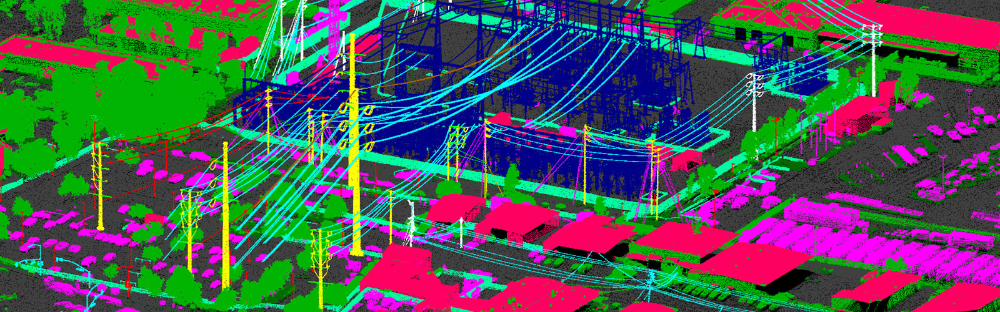
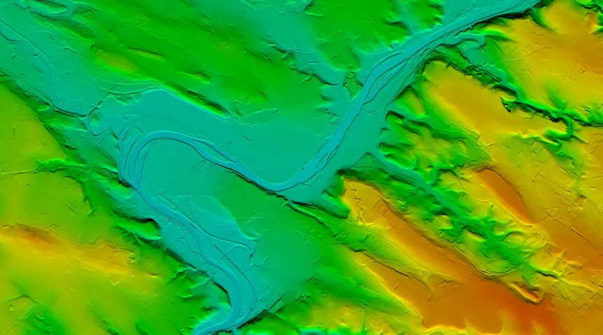

Profile
“A rapid trajectory from traditional mapping to
pre-processing billions of airborne spatial points—then into technical leadership, WebGIS
migration and international delivery.”
From traditional mapping to billions of airborne spatial points. Sangram Kumar Nahak is a Senior Engineer at GeoProcess Consulting, with a career focused on 3D remote sensing, LiDAR processing, GIS analysis, surface modeling, photogrammetry, QA/QC and geospatial automation.
The portfolio below follows the technical areas documented in the CV: powerline and corridor engineering, LiDAR and surface modeling, photogrammetry, QA/QC, WebGIS automation and the production software stack.
Metadata area separation, centerline creation, PRJ creation, automated catenary analysis, danger-zone identification, zone-line to shape conversion and cartographic map generation.
Flight-line matching, trajectory correction, point-cloud registration, ground seed generation, HAG logic and vegetation/building/powerline macro classification.
GCP network optimization, aerial triangulation in Agisoft Metashape, TerraMatch flight-line alignment, seamline editing and orthophoto-to-LAZ colorization.
LAS/LAZ metadata validation, point-density checks, coordinate-system verification, noise filtering, class statistics and compliance checks against international standards.
Transitioning desktop spatial workflows to cloud-enabled WebGIS portals using Python automation, HTML, CSS and JavaScript for real-time 3D spatial data hosting.
Production experience across desktop GIS, CAD, remote-sensing and productivity tools documented in the CV.
The existing portfolio media is retained and reframed around the documented technical domains.



Native video demos from the original website package. Playback remains user-controlled.
The experience below is transcribed and structured from the supplied CV. Dates and roles are kept as provided.
Client-facing and technical delivery role supporting international accounts and internal execution teams.
Worked with international stakeholders to transform complex spatial data into advisory and production solutions.
Focused on quality assurance and analysis of GIS data as the final technical filter for complex spatial datasets.
A high-growth chapter centered on photogrammetry, orthorectification, advanced classification and mentoring engineers.
Represented the firm during a 9-month international deployment, working closely with Qatar’s Ministry of Municipality and Environment (MME).
Fast-tracked to Team Lead in 1.7 years, leading engineering teams and modernizing technical workflows.
Primary technical liaison for a major UK client, bridging complex 3D point clouds and real-world spatial decisions.
Professional gateway into high-precision 3D remote sensing, moving from traditional mapping into airborne spatial-data pre-processing.
The CV highlights not only production skills, but also team leadership, client communication, project delivery and stakeholder coordination.
Fast-tracked to Team Lead, with responsibility for project timelines, production workflows, QA/QC pipelines and engineering-team coordination.
Managed client touchpoints, updates, feedback loops and technical communication across international accounts.
Tracked team efficiency and schedules, aligning regional client managers with technical execution teams and supporting on-time delivery.
Experience includes Qatar’s MME, UK infrastructure clients and international client ecosystems, with onsite technical advisory exposure.
All education entries below are taken from the supplied CV.
For LiDAR, GIS, remote sensing, QA/QC, WebGIS or technical delivery discussions, use the channels below.